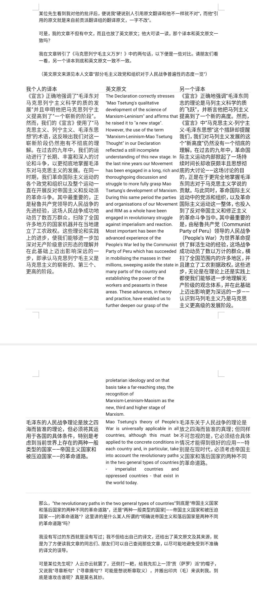
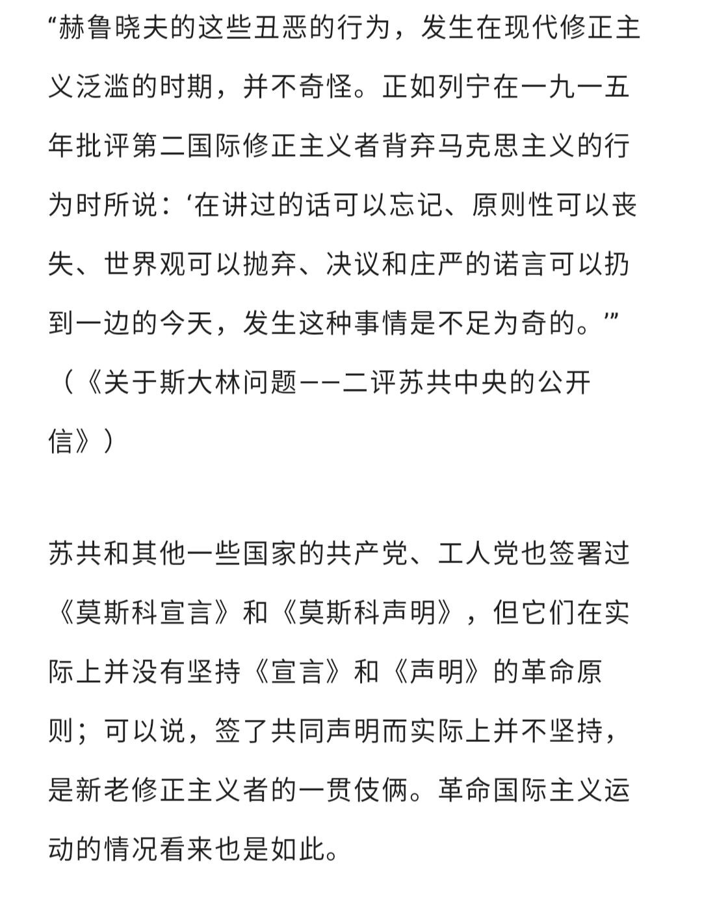

这是一篇好文章。
希望能被毛主义图书馆收录
本文：
两方面的材料：
Defend and apply the universality of Protracted People’s War!
By Ard Kinera, June 6th 2019
Proposal regarding the balance of the International Communist Movement and of its current General Political Line
（TPK/ML对于斯大林和林彪的认识不太正确）
On the so-called universality of protracted people’s war
By Andy Belisario 31 August 2019
行文至此，还是要絮叨一下“3 worlds”理论的问题。
首先要指出，无弋先生在答案《第二世界有没有具体的含义？》中宣称：【回头再说1974年的情况。这一年，“Three worlds”正是被公布于世。】细究起来，这其实是犯了割裂历史的错误。
的确，从现有材料来看，东方leader在1974年2月会见赞比亚总统卡翁达时首次提出了完整的“三个世界”提法。（《关于三个世界划分问题》：http://ex.cssn.cn/zt/zt_xkzt/gjyj_zt/zgwj/xzgclcq/201909/t20190925_4977362.shtml）
不过，3 worlds理论本身也并非无源之水。鲜为人知的是，在1973年7月东方leader会见刚果（布）总统恩古瓦比时，这个理论至少已经定下了一部分基调（譬如明确认定亚（日本除外）、非、拉为第三世界），参见：《CP如果不支持世界人民GM，那还算CP？！——毛主席会见恩古瓦比》：（http://www.wyzxwk.com/Article/lishi/2013/03/300402.html））。
请不要用“这是外交场合讲的话”一类的理由说事，东方leader还在1974年会见丹麦首相保罗•哈特林时会见时谈过资产阶级法权相关的问题，莫非这也属于 “外交战术”？
接下来，无弋先生在答案《第二世界有没有具体的含义？》中如是说：
正如人有男性女性之分，有亚洲人美洲人之分一类一样，每种事物都是极为复杂的，有多个侧面，也就有多种分类方法。但是，多种分类方法不能从根本上替代对事物进行根本性质的分析。如果说把这个理论视为socialist国家临时外交战术，是可以理解的（当然也未必就是全盘肯定），如果把这个划分绝对化，上升为替代Lenin对于帝国主义和殖民地附属国、压迫民族和被压迫民族的划分，那就是绝对的错误。
要么是“socialist国家临时外交战术”（笔者的印象中，这个观点应当也来自于早期美国RCP等党），要么就是“替代Lenin对于帝国主义和殖民地附属国、压迫民族和被压迫民族的划分”，无弋先生大概不愿想起另一种情况吧——【第三阶段关于“Lenin对于帝国主义和殖民地附属国、压迫民族和被压迫民族的划分”的进一步发展】。或许按其定义，“发展”就等于“替代”？
如果停留在狭义上的“Lenin对于帝国主义和殖民地附属国、压迫民族和被压迫民族的划分”就够了，那么根本就不会有作为Maoism三大组成部分之一的New Democracy ＧＭ理论。
口头上，无弋先生也讲“把东方leader当导师，并不是我认同他每句话、每个结论……对于其它导师也是如此”（ 《列宁、斯大林和MAO的理论水平谁更高？》），然而从他迄今为止的实际表现来看，总的来说还是“回到Lenin”的套路。
无弋先生对（他眼中的）所谓“（“3 worlds”理论）支持第二世界反抗超级大国控制”耿耿于怀。不过，即便我们不考虑“3 worlds”理论，也未必会得出无弋爰剑先生乐意见到的结论。譬如，1963年的《关于国际CP运动总路线的建议》就有【在美帝控制或者企图控制的资本主义国家里，工人阶级和人民群众的主要打击对象是针对美帝，也针对出卖民族利益的垄断资产阶级和国内其他反动势力】之语。只不过，这在（不顾具体历史条件地）生搬硬套Lenin的那个【（在帝国主义国家）民族运动是早已过去的事情】的带有历史局限性的结论（斯、MAO实际都发表过不同看法）、先验地认定不许越雷池一步的无弋爰剑先生（当时还是可汗先生）眼中“有很大问题”罢了（笔者的观点相反，这恰恰是意味着“进一步发展”的精华所在）。相应的问题，另文已有论述，这里不再赘述。
至于（第三世界国家）“发展民族经济”、“维护民族主权”一类的措词，是个比较复杂的问题，要挑错是很容易的，但不应脱离具体的历史条件进行苛责。首先：远在3 worlds理论出现之前，这类提法就大行其道了（1972年版《各国概况》中就有类似内容，要找更早的内容也可以找到，当然这不代表说在此之前的表述就一定是对的），换言之，无弋先生耿耿于怀的东西，其实并不是3 worlds理论的根本；其次，无弋先生宣称【按照ML主义基本观点，殖民地附属国只有走proletariat领导的new democratic revolution,，进而走上socialist道路才可能真正的”赢得民族独立、发展民族经济“。】（实则new democracyＧＭ理论是“ＭＬＭ，主要是Maoism”的组成部分，光提“Ｍ”本身就显得含混），这在比较宽泛的意义上是可以成立的（反正，那些没有经历new democratic revolution的第三世界国家，其“独立”其实是从殖民地变成半殖民地），然而，即便不考虑Maoism形成的具体时间，也应该注意到：我党我国时期的这类文宣的着眼点本来就不是“proletariat领导的new democratic revolution”，更多地是构建国际反霸统一战线的需要使然（当然，也不应将这种具体需要看成3 worlds的本质，否则难免得出“临时外交战术”一类的结论，乃至作出诸如【在当时的第三世界government领导下“发展民族经济”】之类的误读）。顺便一提，美国RCP前身美国革命联盟是在1974年将反霸统一战线承认为“在世界范围内推行普罗ＧＭ斗争的总战略”的（参见《资本主义是怎样在苏联复辟的》一书），虽然在1976年以后又来了个一百八十度大转弯。
不过，转弯归转弯，已经凝固的历史却是改变不了的。我们姑且还是引用一下美国RCP自己当年的言论好了：
事实上早在一九四六年，在描述一个在许多方面同今天相象的形势时，MAO就制定了在今天的形势下指导各国ＧＭ者的原则。他指出，到那时候，苏联(当时是一个社会主义国家)同某些反动势力，特别是美、英、法之间，可能有某些妥协，尤其在外交关系和贸易方面更是这样。可是MAO着重指出，“这种妥协，并不要求资本主义世界各国人民随之实行国内的妥协。各国人民仍将按照不同情况进行不同斗争。”
还是让我们来看看1988年秘鲁CP的论述吧：
我们认为东方leader关于3 worlds的论述是正确而公正的，它与Lenin在阶级分析和矛盾分析基础上所提到的世界力量分布的论述是相联系的。我们拒绝总设计师对3 worlds的oppotunism和revisionism的歪曲。这是充当美国或苏联的尾巴，背叛革命。从这里出发，古斯曼教授分析了当今的现状，并将证明了三个世界理论。
………………………………
这一切都为ＣＰ人确立世界ＧＭ的策略和战术做铺垫。东方leader已经建立了世界ＧＭ的战术和战略，但是某国的修正主义分子否认这些。因此，我们有责任去从他自己的想法中汲取灵感，尤其是在新的形势下。（《秘鲁CP总政治路线——国际路线》）
三个世界理论（我国时期的版本，或贡萨洛派理解的版本）与世界ＧＭ的关系可以商榷（这个理论和New Democracy ＧＭ理论应该是相联系的），但（按照秘鲁CP的理解）至少也是“为ＣＰ人确立世界ＧＭ的策略和战术做铺垫”的，这不能用“临时外交战术”来强行解释（顺便一提，国际Mao派运动中还有一种将该理论归结为revisionism者背着东方leader炮制的说法，不过这简直是阴谋论了）。
2016年由贡萨洛派诸党签署的《论国际形势和国际CP运动的任务》重申了【作为Maoism者，我们支持东方leader关于“3 worlds形成”的观点】（贡萨洛派向来认为亚非拉是【ＧＭ风暴地区和无产阶级世界ＧＭ的基础】）。不必讳言，贡萨洛派的理论和我国时期的版本也有一定出入（譬如，贡萨罗派认为“第三世界正向欧洲扩散”；我国时期则认为东欧诸修也是第二世界，第二世界不一定都是帝国主义），无弋爰剑先生基于其一贯套路，如果抓住这些枝节问题进行发挥，倒也在意料之中。然而有一点是肯定的，贡萨洛派并不同意“外交战术”这一解释，显而易见的是，现在根本没有“外交”可做。此外，他们认为3 worlds理论应该归功于东方leader。用贡萨洛派背景的美国《人民论坛报》2020年12月的《庆祝东方leader诞辰127周年》的话说，【东方leader证实了，在全球class斗争中，3 worlds被划分出来。】
3 worlds理论的问题，迄今为止在国际MAO派运动中仍然颇有争议，因此对这个话题不想再多费笔墨了。然而，不管如何看待三个世界理论，至少有一点是可以肯定的：在国际MAO派运动中，迄今仍然坚持3 worlds理论的派别（＝贡萨洛派，固然其理解与我国时期也有发出入，但这是多和少的问题，不是有和无的问题），正是首倡Maoism为第三阶段的派别。
这篇文章对于将“合法斗争”作为一种积累的手段似乎过于轻视了。因为在某国只有做牛做马才是合法的，很多情况下只有掩护机构看起来无关痛痒才能存在得比较久。“合法”与“非法”属于一个辩证范畴有先后顺序。
关于帝国主义下PPW的问题，可以借鉴一下之前法共、越共（的敌占区，虽然不是发生在帝国主义国家）抵抗运动的经验。
反方看法：
无产阶级、国际主义、马克思列宁毛主义的五一劳动节！
值此 5 月 1日国际无产阶级斗争日之际，我们向全世界工人进行的所有示威活动致敬。它们证明了无产阶级是一个国际阶级，在各国为同一个目标而战：推翻资本主义制度，推翻世界帝国主义制度，建立无产阶级政权，建设社会主义，共同走向共产主义。
今年是列宁的《该怎么办？》发表150周年，这是世界社会主义革命伟大大师为建设共产党，即今天的马克思列宁毛主义的先进支队而给予我们的理论武器。工人阶级，战争机器和在每个国家进行无产阶级革命的必要指南。
没有革命理论，就没有革命政党。没有革命党，就没有革命。
列宁用社会主义十月革命的胜利证明，只有这样才能把帝国主义战争变成社会主义革命。
而今天，在帝国主义体系正处于危机中走向第三世界帝国主义战争的当前条件下，这比以往任何时候都更成为我们必须转变为行动指南的口号。
毛告诉我们：
“反对这种战争的方法，就是在战争爆发前千方百计阻止它，一旦爆发，就以战争反对战争，尽可能以正义战争反对非正义战争”（《论持久战》） , 1938)
俄罗斯帝国主义入侵乌克兰是帝国主义内部矛盾的当前结果。美国/北约/欧盟帝国主义将其带到俄罗斯边境的运动和行动，利用其由包括纳粹复仇主义在内的反动资本主义势力统治的乌克兰傀儡国家，其自己的帝国主义军队与俄罗斯帝国主义的入侵互动，进而旨在取消俄罗斯帝国主义的入侵。乌克兰人民的主权权利，轰炸、围困、屠杀、对该国整个地区的破坏，并造成数百万难民死亡和数百万难民。
这场战争的特点在于世界帝国主义之间为新的世界分裂而战争的加速趋势。
世界无产阶级和被压迫人民支持乌克兰群众的无产阶级和人民抵抗，但它必然反对俄罗斯、美国、北约、欧盟国家以及他们自己的泽连斯基的西方帝国主义政府公仆。
所有帝国主义政府都展开新的军备竞赛，增加军费开支，实行他们向无产阶级和人民负担的战时经济，采取立场扩大冲突，以捍卫帝国主义资产阶级的利益及其经济和地缘战略利益。
帝国主义之间的战争与世界经济危机、生产过剩危机、因大流行而加剧的危机交织在一起，再次显示了世界资本主义/帝国主义体系的基本规律，它始终是剥削、贫困、镇压和压迫人民，在自身规律和矛盾所决定的历史关头，它变成了反动派和帝国主义战争。
5月 1日，必须加强全世界反对自己的政府和国家的阶级斗争，把无产阶级和人民群众的一切形式的斗争团结起来，争取群众反抗的必要目标，它们是转变为革命斗争的杠杆。
这场斗争的根本工具是马克思列宁毛主义共产党，无产阶级和人民群众的统一战线和战斗力量，以便在斗争的发展过程中，阶级战争、革命战争、人民战争将推进到’起义’。
共产党人任务的关键是根据各国国情支持正在进行的世界人民战争以及为新民主主义和社会主义革命建立共产党的设立/建设。
修正主义者和各种形式的右倾机会主义是我们的主要敌人和资产阶级工作的主要盟友，但显然，如果我们摆脱思想极端主义构成的“左”倾机会主义的次要但有害的影响，我们就可以克服这个敌人。 ，小资产阶级革命主义，军国主义主观主义。
5月 1日，我们呼吁团结起来，召开一个真正统一的国际会议，这可以催生一个新的国际MLM组织，无论是理论的、政治的还是实践的。
为实现这一必要而紧迫的会议，必须加强行动、双边和多边会议、国际会议和论坛的统一，并在其中发展积极斗争和两条路线斗争，为统一服务。
我们想要的团结必须能够回应世界上反抗资本主义和帝国主义无尽恐怖的无产阶级和人民群众的利益和需要。
如果传销国际共产主义运动能够团结起来，完成当前的斗争任务。我们将能够从当前的战略防御转向战略平衡和进攻，并将我们的历史口号转化为实践。
全世界无产阶级和被压迫人民，联合起来！
无产阶级国际主义万岁！
革命是唯一的解决方案！
帝国主义死！
社会主义和共产主义万岁！
毛主义共产党 - 意大利
ci-ic的回应：
MCP Italy的回应：
ci-ic对MCP的再次批评：
- They wrote: “The keys of the tasks of the Communists are the support to the ongoing people’s wars in the world and the constitution/construction of the Communist Parties for New Democratic and Socialist revolutions, according to the conditions of each country.”
Our stance: It is exactly the other way round. The main, first and foremost task is the contitution or reconstitution of the Communist Parties (nota bene: the culmination of the constitution or reconstitution is – as the PCP thought us – the initiation of the Peoples War!) and simultaneously the two other instruments of the revolution, in midst of the fiercest class- and two-line-struggle. This self-evidentally also includes proletarian internationalism, the spirit of communism, and as part of this the support for the ongoing peoples wars and the ones to be initiated! As well as the support of the developing new forces in the ICM in their respective struggle. Do you do anything in these regards? The impression you give is that you are simply traffickers with the People’s War in India and a liquidationist force in the ICM (see the end of our critique). Do you see?
- 他们写道：“共产党人的任务的关键是根据每个国家的国情支持正在进行的世界人民战争和共产党的设立/建设，以进行新民主主义和社会主义革命。”
我们的立场：恰恰相反。主要的、首要的任务是共产党的立宪或改组（注意：设立或改组的高潮——正如 PCP 认为的那样——发动人民战争！），同时还有其他两个革命工具，在最激烈的阶级斗争和两条路线斗争中。这不言而喻也包括无产阶级国际主义、共产主义精神，以及对正在进行的和即将发动的人民战争的支持！以及ICM中发展中的新生力量在各自斗争中的支持。你在这些方面做了什么吗？你给人的印象是，你只是印度人民战争的贩运者和 ICM 中的清算主义力量（见我们批评的结尾）。你有看到？
关于icm与mcp i争论的前情提要。
直接说了吧，你们是不是要在美帝和某帝争夺中支持某帝？
这个回答不难吧。
一些人天天念叨三个世界，论证美帝如何强大，最后结论不还是落脚到“特色不行，色厉内荏”，“美帝与特色矛盾应该批判的支持”吗？
你们天天念叨三个世界的人，建议就美帝和某国矛盾明确表个态。
你对三个世界理论的理解怕不是有问题
列宁指出，帝国主义是资本主义的最高阶段。在帝国主义时代，世界分裂为帝国主义国家和被压迫民族。当今世界仍然处于帝国主义时期。毛泽东指出，当今的世界可以分为三个世界。第一世界是超级大国，第二世界是非超级大国的帝国主义国家，第三世界是被压迫民族。但是，毛泽东关于三个世界的理论在1970年代被不正确地阐述，邓小平在1974年联合国大会的讲话上，尽管正确地指出第三世界在经济上仍然受到帝国主义国家的控制、压迫，却
错误地提出第三世界在“取得政治上的独立后”，面临的任务只是“肃清殖民主义残余势力，发展民族经济”，没有谈到进行新民主主义革命的必要性。
1976年以后，中国的修正主义进一步歪曲三个世界理论，不仅给第三世界的反动国家辩护，硬说第二世界争取“民族独立”的斗争也是正义的，完全删去了三个世界理论的反帝色彩。
贡萨罗主席批判了邓小平等人对三个世界理论的歪曲，重申了革命的三个世界理论。《国际路线》指出“第一世界有两个超级大国：苏联和美国，两者相互争夺世界霸权并随时可能发动帝国主义战争”，“第二世界是非超级大国的帝国主义国家，他们有着较弱的经济、政治和军事力量，例如日本、德国、法国和意大利等。这些国家与美苏两国存在着矛盾……同时他们也会发动战争去侵略被压迫民族；而且，他们之间的矛盾也十分尖锐”，“第三世界由亚洲、非洲和拉丁美洲的被压迫民族组成。他们是殖民地或封建制度没有被破坏的半殖民地。在这基础上产生了官僚资本主义，他们与一个超级大国或帝国主义国家相联系。”贡萨罗主席关于三个世界的论述，完全不同于修正主义者的论述。贡萨罗主席强调了作为第一、第二世界的帝国主义者的反动性，以及它们互相之间发生战争的可能性。贡萨罗主席对第三世界进行了阶级分析，指出第三世界仍然是殖民地或半封建半殖民地，民主革命的任务还远没有完成。尽管资本主义在这些国家也有了一定程度的发展，但占主导地位的资本主义是官僚资本主义，它服务于帝国主义，并与本国的半封建主义存在紧密的联系。官僚资本主义是被压迫国家的垄断资本主义，它包括非国有和国有两种形式，这种官僚资本主义剥削本国的工人、农民、城市小资产阶级、并压迫民族资产阶级。被压迫国家革命的对象，正是帝国主义、官僚资本主义和半封建主义。
还是这段话
马列毛主义的三个世界理论和修正主义的三个世界理论是两种根本不同的理论
1 个赞
反美就是挺中？
差不多得了。
2 个赞
然而胡乱闯背书的【三个世界】恰恰是反复大量谈到所谓【反抗超级大国控制】内容，这一点你否认不了吧。
请不要把别人的屎盆子扣我们头上，谢谢合作。
别人怎么怎么鼓吹中修如何如何正义，那是别人。我们向来认为中修社会帝国主义和美帝国主义是狗咬狗。
并且三个世界理论在社会主义时期受到了周恩来修正主义的影响，进而会有歪曲的情况。
这上面明明引用的都是大批的胡乱闯原文，你难道看不见吗？


两条路线的斗争并不是两个人的斗争，有些话很难听，但是这是没有办法的。